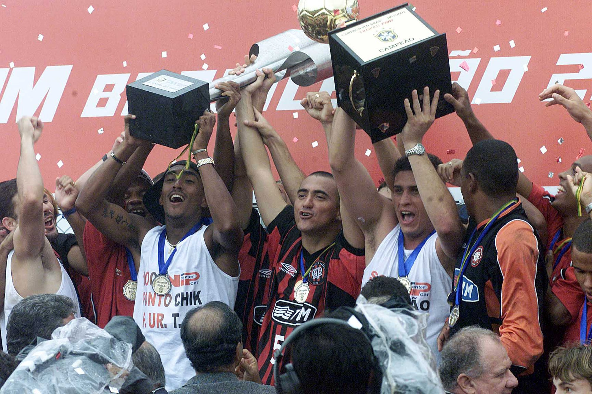
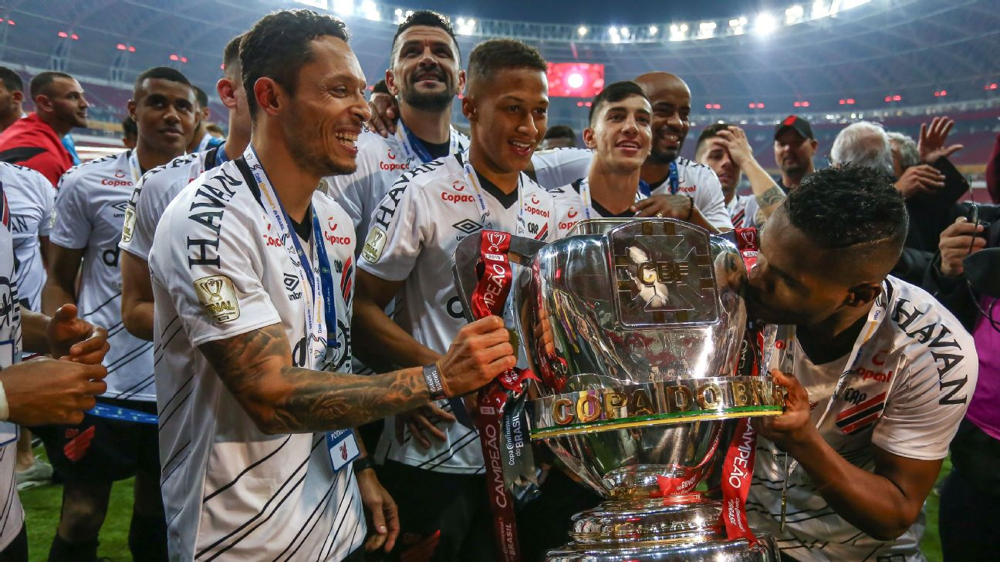
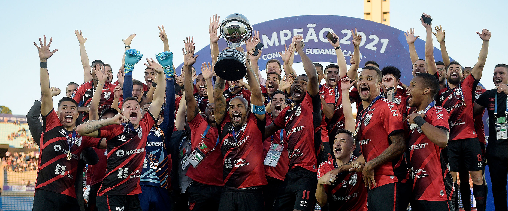

Títulos Históricos
Títulos Históricos
🏆 Campeonato Brasileiro — 2001
O Athletico Paranaense conquistou o Brasileirão de 2001, vencendo o São Caetano na volta da final com gol de Alex Mineiro. Foi o primeiro título nacional do clube.
🏆 Copa Sul-Americana — 2018
Em 2018, o Furacão conquistou sua primeira taça internacional, vencendo o Junior Barranquilla nos pênaltis na Arena da Baixada, com o General Thiago Heleno batendo o penal decisivo e cravando seu nome na história do clube.

🏆 Copa do Brasil — 2019
Em 2019, o Athletico venceu o Internacional e conquistou sua primeira Copa do Brasil, com gols de Léo Cittadini e Rony na volta da grande final, em pleno Beira Rio lotado.
🏆 Copa Sul-Americana — 2021
Em 2021, o Furacão levantou novamente a Sul-Americana, vencendo o Red Bull Bragantino por 1x0 na final, com golaço antológico de Nikão.
